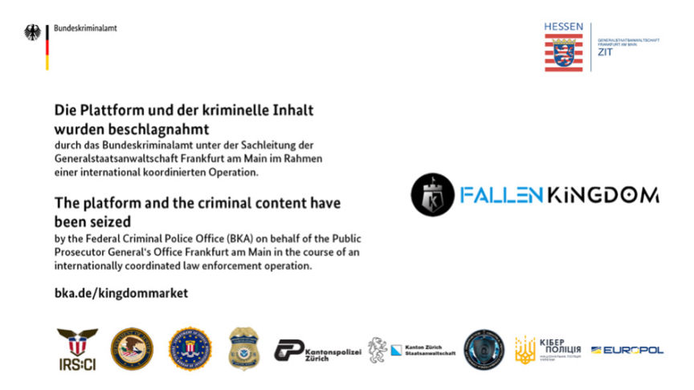
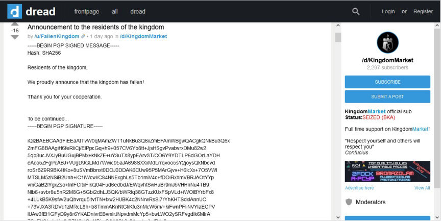
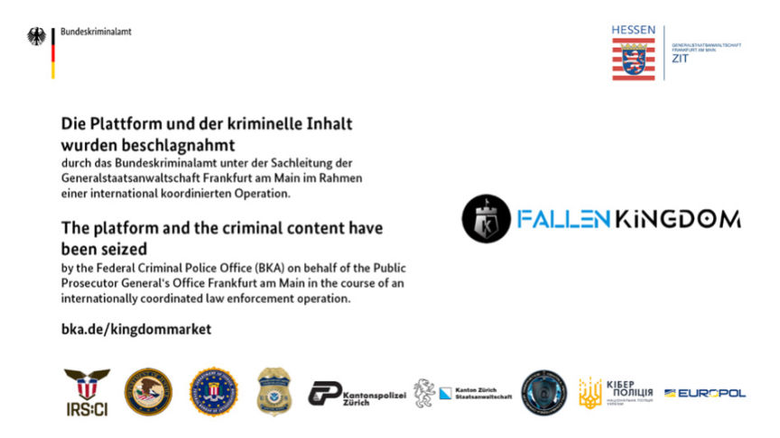
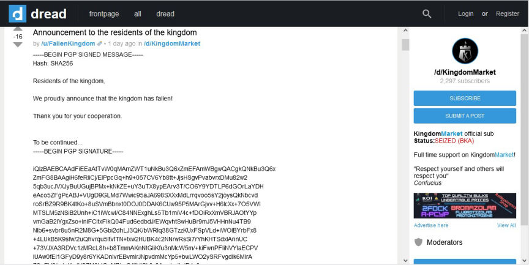

German Authorities Seized Kingdom Market
~2 min read | Published on 2023-12-21, tagged Arrested, Darkweb-Market, Seized, admin using 293 words.
An international operation led by the Federal Criminal Police Office (BKA) and the internet-crime combating unit of Frankfurt (ZIT) has resulted in the seizure of Kingdom Market and the arrest of a suspected admin.

The BKA confirmed the takedown of Kingdom Market via a press release on December 20, 2023. The seizure of the market server infrastructure began on December 16 and included LE agencies from the USA, Switzerland, Moldova, and Ukraine.
Kingdom Market was launched in March 2021 and allowed its users to buy or sell, illicit drugs, fake documents, stolen information, and other goods and services.
The BKA said that at the time of the takedown, the market had over 42,000 listings.
In addition to placing a seizure banner on Kingdom Market's home page, LE used the market's PGP key to make a post on the Dread, taunting its users.

US authorities arrested Alan Bill, a Slovakian they linked to the aliases "Vend0r" and "KingdomOfficial". Vend0r created Kingdom Market's official subdread.
The investigators traced crypto sent from Kingdom's wallet to Bill's accounts on undisclosed exchanges. The IP address used to access the accounts had also been used to access the market's Reddit account.
A search of Bill's Google account resulted in the discovery of passwords and seed phrases for multiple cryptocurrency wallets. One of the wallets had received approximately $4,590 in bitcoin from Kingdom's wallet. The Bitcoin was then sent to an account under Bill's name on an undisclosed exchange.
In Bill's email account, the investigators found several files containing the word "Vend0r." They also found a video that showed someone accessing the market's back end.
Bill was arrested on December 15.
The BKA revealed that the analysis of the data acquired from the market's servers and investigations to identify Bill's partners are ongoing.

Seizure banner displayed on Kingdom Market
The BKA confirmed the takedown of Kingdom Market via a press release on December 20, 2023. The seizure of the market server infrastructure began on December 16 and included LE agencies from the USA, Switzerland, Moldova, and Ukraine.
Kingdom Market was launched in March 2021 and allowed its users to buy or sell, illicit drugs, fake documents, stolen information, and other goods and services.
The BKA said that at the time of the takedown, the market had over 42,000 listings.
In addition to placing a seizure banner on Kingdom Market's home page, LE used the market's PGP key to make a post on the Dread, taunting its users.

US authorities arrested Alan Bill, a Slovakian they linked to the aliases "Vend0r" and "KingdomOfficial". Vend0r created Kingdom Market's official subdread.
The investigators traced crypto sent from Kingdom's wallet to Bill's accounts on undisclosed exchanges. The IP address used to access the accounts had also been used to access the market's Reddit account.
A search of Bill's Google account resulted in the discovery of passwords and seed phrases for multiple cryptocurrency wallets. One of the wallets had received approximately $4,590 in bitcoin from Kingdom's wallet. The Bitcoin was then sent to an account under Bill's name on an undisclosed exchange.
In Bill's email account, the investigators found several files containing the word "Vend0r." They also found a video that showed someone accessing the market's back end.
Bill was arrested on December 15.
The BKA revealed that the analysis of the data acquired from the market's servers and investigations to identify Bill's partners are ongoing.